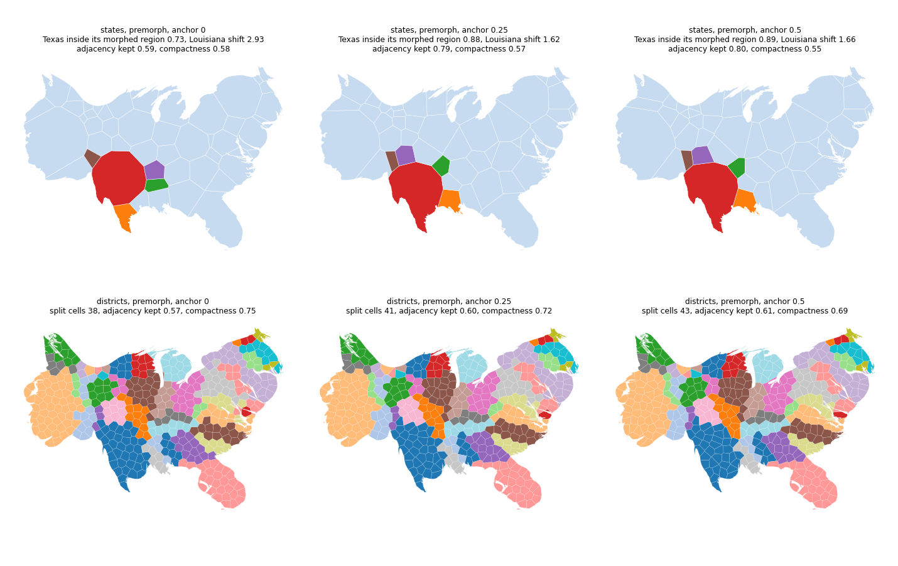

With premorph the generator anchor defaults to 0.25 instead of 0.5. On the states and districts 0.25 keeps almost all of the fidelity gain over no anchor, with rounder cells; look at Texas and Louisiana in the top row and at the district cells in the bottom row.
The runs, the tables and the study of prescale_components and intra_group_spring are on exploration-voronoi-followup.
| data | anchor | Texas inside its morphed region | Louisiana shift | split cells | adjacency kept | compactness |
|---|---|---|---|---|---|---|
| states | 0 | 0.73 | 2.93 | 3 | 0.59 | 0.58 |
| states | 0.25 | 0.88 | 1.62 | 4 | 0.79 | 0.57 |
| states | 0.5 | 0.89 | 1.66 | 5 | 0.80 | 0.55 |
| districts | 0 | 0.94 | 5.04 | 38 | 0.57 | 0.75 |
| districts | 0.25 | 0.95 | 5.05 | 41 | 0.60 | 0.72 |
| districts | 0.5 | 0.96 | 5.07 | 43 | 0.61 | 0.69 |
prescale_components: new TestPrescaleComponents runs the states with Alaska and Hawaii at resolution 96 with and without the option; with it Alaska and Hawaii are within 2 % of their targets and the mean error is within area_error_tol, without it the mean error is more than ten times larger. Nothing else changes for that option.
Premorph with the anchor at 0, 0.25 and 0.5. Top: the states, with Texas (red), Louisiana (orange), Arkansas (green), Oklahoma (purple) and New Mexico (brown) highlighted. Bottom: the districts colored by state. The 0.5 column is the result before this PR; the 0.25 column is the new default.